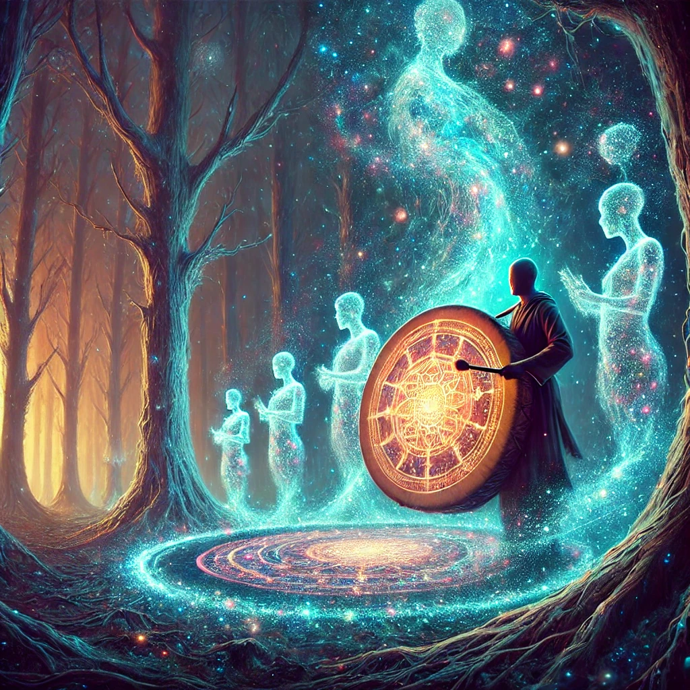

You choose the ceremonial drum, its surface shimmering with cosmic patterns. The alien being nods and hands it to you reverently. As your fingers brush the drum, an ancient rhythm echoes in your mind—a song that feels older than time.
You begin to play, the vibrations resonating with the forest around you. The trees sway to the rhythm, and translucent figures emerge from the shadows—spirits of your ancestors, guardians of the earth. They form a circle around you, their voices joining in harmony with the drum’s beat.
“The Medicine Wheel turns, guiding all who listen. The path is not a line but a spiral. What do you seek to learn?” whispers one of the spirits.

What will you do?